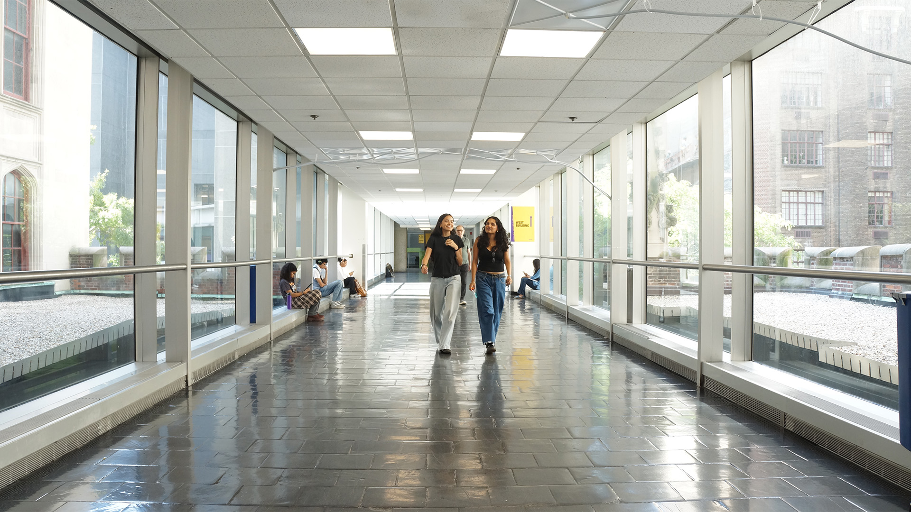
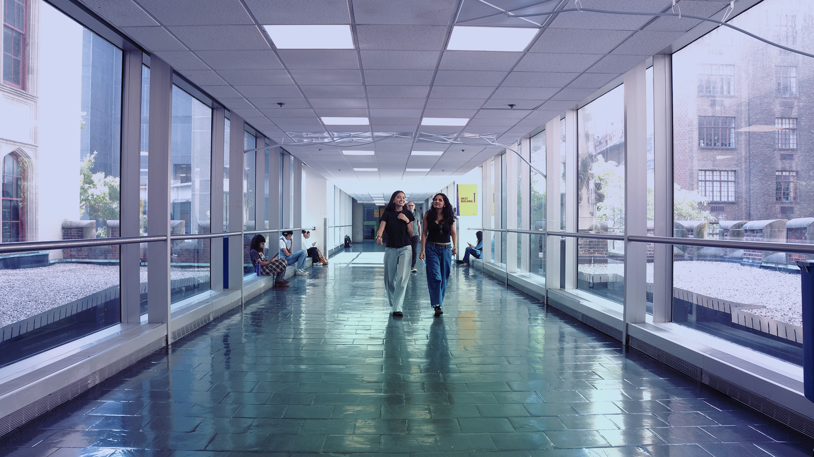

This photo was chosen because...it was most unique out of all photos taken, almost miraculous to have the subject look at me while I was taking the photo & with no surrounding persons. I used different tonal elements such as...lots of adjustment layers w: gradient, brightness contrast curves, exposure, vibrance, color balance,hue/saturation, modify feather & density, a threshold layer on the subject, used the lasso to isolate the subject and add a layer of threshold


This section explores visual storytelling through two distinct images. The first image captures depth through shadow and composition. The second image experiments with color and emotion. I focused on how small changes in lighting can change the mood of the piece dramatically.
Go back: Link to my portfolio